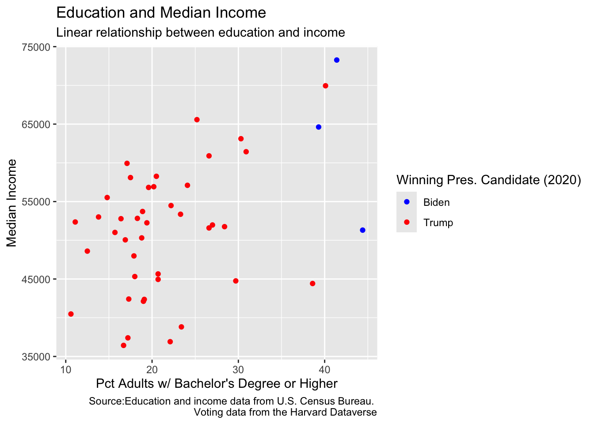

ggplot(data = [dataset],
mapping = aes(x = [x-variable], y = [y-variable])) +
geom_xxx() +
other optionsData Visualization II
SPS 502
Data Visualization Review
Grammar of Graphics
- A grammar of graphics is a tool that enables us to concisely describe the components of a graphic
- A statistical graphic is a
mappingofdatavariables toaesthetic attributes ofgeometric objects. # ggplot Review
Anatomy of a ggplot
ggplot()is the main function in ggplot2Plots are constructed in layers
Structure of the code for plots can be summarized as
- For help with ggplot2, see ggplot2.tidyverse.org
Application: County Demographics and Voting Data
idaho_voting_long <- read_csv("data/idaho_voting_2020.csv")Rows: 176 Columns: 10
── Column specification ────────────────────────────────────────────────────────
Delimiter: ","
chr (6): state, state_po, county_name, office, candidate, party
dbl (4): year, county_fips, candidatevotes, totalvotes
ℹ Use `spec()` to retrieve the full column specification for this data.
ℹ Specify the column types or set `show_col_types = FALSE` to quiet this message.idaho_voting_wide <- idaho_voting_long %>%
pivot_wider(
id_cols = c(county_name, county_fips, totalvotes),
names_from = party,
values_from = candidatevotes
) %>%
rename("democrat_votes" = DEMOCRAT,
"republican_votes" = REPUBLICAN,
"libertarian_votes" = LIBERTARIAN,
"other_votes" = OTHER) %>%
mutate(across(ends_with('_votes'), ~ ./totalvotes * 100, .names = 'pct_{col}')) %>%
mutate(win_candidate = ifelse(pct_republican_votes > pct_democrat_votes, "Trump",
ifelse(pct_democrat_votes > pct_republican_votes, "Biden", NA)))
#note: NA is at the end because ifelse needs to know what to do if neither condition is trueidaho_county_merged <- id_wide %>%
rename("county_fips" = GEOID) %>%
mutate(county_fips = as.integer(county_fips)) %>%
left_join(idaho_voting_wide, by = "county_fips")Data: Idaho County Demographics and 2020 Voting
Data on 2020 Presidential election results, income, age, education, total population, and median home value.
glimpse(idaho_county_merged)Rows: 44
Columns: 23
$ county_fips <dbl> 16001, 16003, 16005, 16007, 16009, 16011, 16013,…
$ NAME <chr> "Ada County, Idaho", "Adams County, Idaho", "Ban…
$ median_incomeE <dbl> 69952, 50309, 51977, 52829, 47983, 58260, 64627,…
$ median_incomeM <dbl> 1549, 3186, 2046, 3650, 2962, 2673, 4953, 7210, …
$ median_ageE <dbl> 37.2, 55.3, 34.1, 39.4, 46.0, 34.1, 43.7, 54.4, …
$ median_ageM <dbl> 0.2, 1.3, 0.3, 0.9, 0.5, 0.3, 0.6, 0.4, 0.4, 0.3…
$ total_populationE <dbl> 469473, 4200, 86742, 6054, 9231, 46246, 22729, 7…
$ total_populationM <dbl> NA, NA, NA, NA, NA, NA, NA, NA, NA, NA, NA, NA, …
$ median_valueE <dbl> 298600, 228500, 167300, 154500, 177500, 168200, …
$ median_valueM <dbl> 3927, 20118, 3431, 11139, 8795, 7821, 32716, 227…
$ pct_collegeE <dbl> 40.1, 18.8, 27.0, 18.3, 17.9, 20.5, 39.3, 28.4, …
$ pct_collegeM <dbl> 0.8, 3.0, 1.3, 2.9, 3.1, 2.2, 3.6, 3.4, 2.1, 1.4…
$ county_name <chr> "ADA", "ADAMS", "BANNOCK", "BEAR LAKE", "BENEWAH…
$ totalvotes <dbl> 259389, 2586, 39553, 3315, 4973, 19996, 13289, 4…
$ democrat_votes <dbl> 120539, 591, 14682, 350, 977, 4124, 8919, 1204, …
$ libertarian_votes <dbl> 5310, 34, 947, 25, 58, 307, 168, 67, 401, 1288, …
$ other_votes <dbl> 2841, 20, 593, 26, 60, 270, 170, 64, 255, 648, 7…
$ republican_votes <dbl> 130699, 1941, 23331, 2914, 3878, 15295, 4032, 34…
$ pct_democrat_votes <dbl> 46.470359, 22.853828, 37.119814, 10.558069, 19.6…
$ pct_libertarian_votes <dbl> 2.0471184, 1.3147718, 2.3942558, 0.7541478, 1.16…
$ pct_other_votes <dbl> 1.0952662, 0.7733952, 1.4992542, 0.7843137, 1.20…
$ pct_republican_votes <dbl> 50.38726, 75.05800, 58.98668, 87.90347, 77.98110…
$ win_candidate <chr> "Trump", "Trump", "Trump", "Trump", "Trump", "Tr…Income and Education Visualization
ggplot(data = idaho_county_merged,
mapping = aes(x = pct_collegeE, y = median_incomeE,
color = win_candidate)) +
geom_point() +
labs(title = "Education and Median Income",
subtitle = "Linear relationship between education and income",
x = "Pct Adults w/ Bachelor's Degree or Higher", y = "Median Income",
color = "Winning Pres. Candidate (2020)",
caption = "Source:Education and income data from U.S. Census Bureau. \n Voting data from the Harvard Dataverse")
Coding Out Loud
Start with the idaho_county_merged data frame

Coding Out Loud
Start with the idaho_county_merged data frame, map college attainment to the x-axis
Coding Out Loud
Start with the idaho_county_merged data frame, map college attainment to the x-axis and map median income to the y-axis
Coding Out Loud
Start with the idaho_county_merged data frame, map college attainment to the x-axis and map median income to the y-axis. Represent each observation with a point
Coding Out Loud
Start with the idaho_county_merged data frame, map college attainment to the x-axis and map median income to the y-axis. Represent each observation with a point and map election winner to the color of each point.
Coding Out Loud
Start with the idaho_county_merged data frame, map college attainment to the x-axis and map median income to the y-axis. Represent each observation with a point and map election winner to the color of each point. Title the plot “Education and Median Income”.
```{r}
#| output-location: column
#| code-line-numbers: |8
ggplot(data = idaho_county_merged,
mapping = aes(x = pct_collegeE, y = median_incomeE,
color = win_candidate)) +
geom_point() +
labs(title = "Education and Median Income")
```
Coding Out Loud
Start with the idaho_county_merged data frame, map college attainment to the x-axis and map median income to the y-axis. Represent each observation with a point and map election winner to the color of each point. Title the plot “Education and Median Income”. Add the subtitle, “Linear relationship between education and income”

Coding Out Loud
Start with the idaho_county_merged data frame, map college attainment to the x-axis and map median income to the y-axis. Represent each observation with a point and map election winner to the color of each point. Title the plot “Education and Median Income”. Add the subtitle, “Linear relationship between education and income”. Label the x and y axes “Pct Adults w/ Bachelor’s Degree or Higher” and “Median Income”, respectively
```{r}
#| output-location: column
#| code-line-numbers: "|10|11"
ggplot(data = idaho_county_merged,
mapping = aes(x = pct_collegeE, y = median_incomeE,
color = win_candidate)) +
geom_point() +
labs(title = "Education and Median Income",
subtitle = "Linear relationship between education and income",
x = "Pct Adults w/ Bachelor's Degree or Higher",
y = "Median Income")
```Coding Out Loud
Start with the idaho_county_merged data frame, map college attainment to the x-axis and map median income to the y-axis. Represent each observation with a point and map election winner to the color of each point. Title the plot “Education and Median Income”. Add the subtitle, “Linear relationship between education and income”. Label the x and y axes “Pct Adults w/ Bachelor’s Degree or Higher” and “Median Income”, respectively, label the legend “Winning Pres. Candidate (2020)”
```{r}
#| output-location: column
#| code-line-numbers: "|12"
ggplot(data = idaho_county_merged,
mapping = aes(x = pct_collegeE, y = median_incomeE,
color = win_candidate)) +
geom_point() +
labs(title = "Education and Median Income",
subtitle = "Linear relationship between education and income",
x = "Pct Adults w/ Bachelor's Degree or Higher",
y = "Median Income",
color = "Winning Pres. Candidate (2020)")
```Coding Out Loud
Start with the idaho_county_merged data frame, map college attainment to the x-axis and map median income to the y-axis. Represent each observation with a point and map election winner to the color of each point. Title the plot “Education and Median Income”. Add the subtitle, “Linear relationship between education and income”. Label the x and y axes “Pct Adults w/ Bachelor’s Degree or Higher” and “Median Income”, respectively, label the legend “Winning Pres. Candidate (2020)”, and add a caption for the data source.
```{r}
#| output-location: column
#| code-line-numbers: "|13"
ggplot(data = idaho_county_merged,
mapping = aes(x = pct_collegeE, y = median_incomeE,
color = win_candidate)) +
geom_point() +
labs(title = "Education and Median Income",
subtitle = "Linear relationship between education and income",
x = "Pct Adults w/ Bachelor's Degree or Higher",
y = "Median Income",
color = "Winning Pres. Candidate (2020)",
caption = "Source:Education and income data from U.S. Census Bureau. \n Voting data from the Harvard Dataverse")
```Coding Out Loud
Start with the idaho_county_merged data frame, map college attainment to the x-axis and map median income to the y-axis. Represent each observation with a point and map election winner to the color of each point. Title the plot “Education and Median Income”. Add the subtitle, “Linear relationship between education and income”. Label the x and y axes “Pct Adults w/ Bachelor’s Degree or Higher” and “Median Income”, respectively, label the legend “Winning Pres. Candidate (2020)”, and add a caption for the data source. Oh! AND fix the candidate name colors with one more layer of code for ggplot
```{r}
#| output-location: column
#| code-line-numbers: "|14"
ggplot(data = idaho_county_merged,
mapping = aes(x = pct_collegeE, y = median_incomeE,
color = win_candidate)) +
geom_point() +
labs(title = "Education and Median Income",
subtitle = "Linear relationship between education and income",
x = "Pct Adults w/ Bachelor's Degree or Higher",
y = "Median Income",
color = "Winning Pres. Candidate (2020)",
caption = "Source:Education and income data from U.S. Census Bureau. \n Voting data from the Harvard Dataverse") +
scale_color_manual(values = c("blue","red"))
```
Argument names
You can omit the names of first two arguments when building plots with
ggplot().
ggplot(data = idaho_county_merged,
mapping = aes(x = pct_collegeE, y = median_incomeE,
color = win_candidate)) +
geom_point() +
labs(title = "Education and Median Income",
subtitle = "Linear relationship between education and income",
x = "Pct Adults w/ Bachelor's Degree or Higher",
y = "Median Income",
color = "Winning Pres. Candidate (2020)",
caption = "Source:Education and income data from U.S. Census Bureau. \n Voting data from the Harvard Dataverse") +
scale_color_manual(values = c("blue","red")) ggplot(idaho_county_merged,
aes(x = pct_collegeE, y = median_incomeE,
color = win_candidate)) +
geom_point() +
labs(title = "Education and Median Income",
subtitle = "Linear relationship between education and income",
x = "Pct Adults w/ Bachelor's Degree or Higher",
y = "Median Income",
color = "Winning Pres. Candidate (2020)",
caption = "Source:Education and income data from U.S. Census Bureau. \n Voting data from the Harvard Dataverse") +
scale_color_manual(values = c("blue","red")) Aesthetics
Aesthetics options
Commonly used characteristics of plotting characters that can be mapped to a specific variable in the data are
colorshapesizealpha(transparency)
Color
ggplot(data = idaho_county_merged,
mapping = aes(x = pct_collegeE, y = median_incomeE,
color = win_candidate)) +
geom_point() +
labs(title = "Education and Median Income",
subtitle = "Linear relationship between education and income",
x = "Pct Adults w/ Bachelor's Degree or Higher",
y = "Median Income",
color = "Winning Pres. Candidate (2020)")Shape
ggplot(data = idaho_county_merged,
mapping = aes(x = pct_collegeE, y = median_incomeE,
shape = win_candidate)) +
geom_point() +
labs(title = "Education and Median Income",
subtitle = "Linear relationship between education and income",
x = "Pct Adults w/ Bachelor's Degree or Higher",
y = "Median Income",
shape = "Winning Pres. Candidate (2020)")Alpha
ggplot(data = idaho_county_merged,
mapping = aes(x = pct_collegeE, y = median_incomeE,
color = win_candidate,
size = total_populationE,
alpha = pct_democrat_votes)) +
geom_point() +
labs(title = "Education and Median Income",
subtitle = "Linear relationship between education and income",
x = "Pct Adults w/ Bachelor's Degree or Higher",
y = "Median Income",
color = "Winning Pres. Candidate (2020)")Size
ggplot(data = idaho_county_merged,
mapping = aes(x = pct_collegeE, y = median_incomeE,
color = win_candidate,
size = total_populationM)) +
geom_point() +
labs(title = "Education and Median Income",
subtitle = "Linear relationship between education and income",
x = "Pct Adults w/ Bachelor's Degree or Higher",
y = "Median Income",
color = "Winning Pres. Candidate (2020)")
Extra Stuff: Pulling Census Data with tidycensus
id_education <- get_acs(
geography = "county",
variables = "DP02_0068P",
state = "ID",
year = 2020,
geometry = TRUE
)Extra Stuff: Visualizing Census Data with tidycensus
ggplot(data = id_education, aes(fill = estimate)) +
geom_sf() +
scale_fill_distiller(direction = 1) +
labs(title = " Educational Attainment by County",
caption = "Data source: 2020 5-year ACS, US Census Bureau",
fill = "ACS estimate") +
theme_void()